Accepted and closed · 30 October 2026 · User completed the accessible floor, defeated the guardian and collected the loot
Easy placeholder encounters, designated guardian gate and once-only supplies. Stairs rooms have initially closed unlocked doors, permanent open state and bent protected arrival alcoves. Floor travel, hub and campaign victory remain unavailable.
Verification, reproduction and limits · Implemented design · Provenance, image dimensions and hashes · Separate checked-combat trace
Seed 5, depth 1, generator/templates 3/3. PC03 views are independent diagnostic reconstructions from explicit poses, with authoritative actor damage for partial/full gate completion. They are not a continuous fought expedition. A separate test-owned trace verifies checked combat and replay. All exports use hidden application-owned windows; no OS input automation.
Click each image for the 1920×1080 export. PC03 previews are application-exported 1280×720. Basic reused door/gate art is not final visual quality.
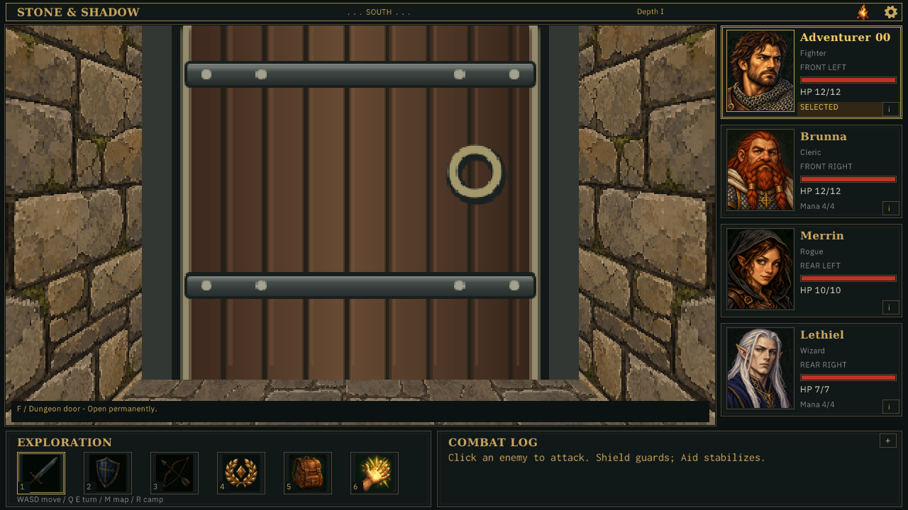
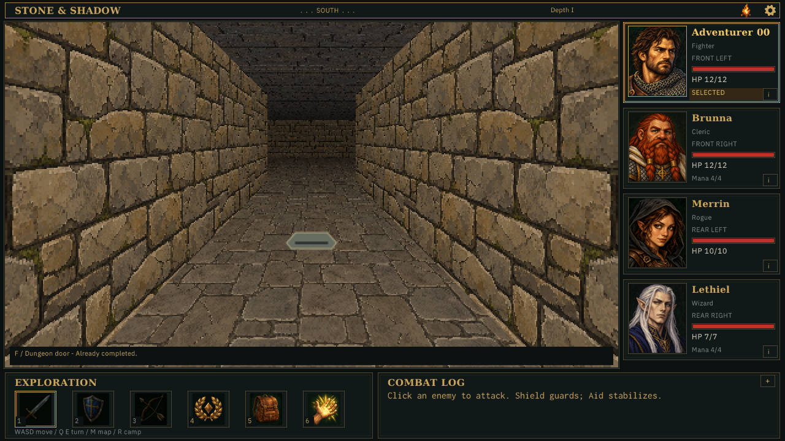
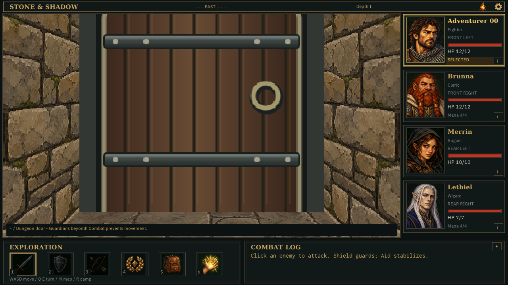
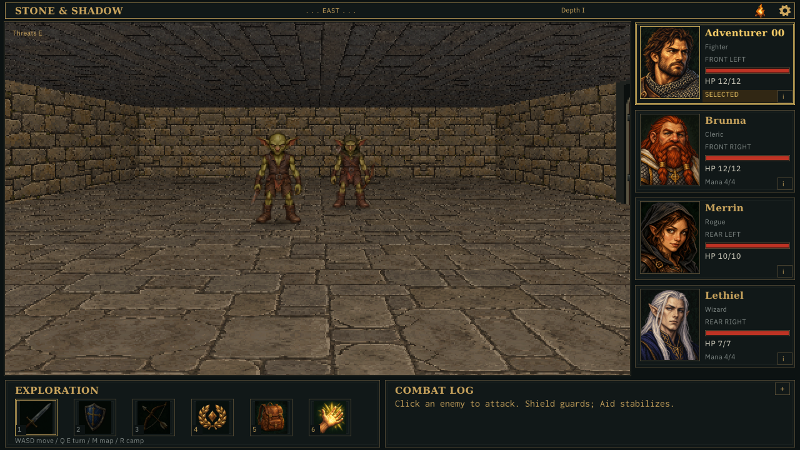
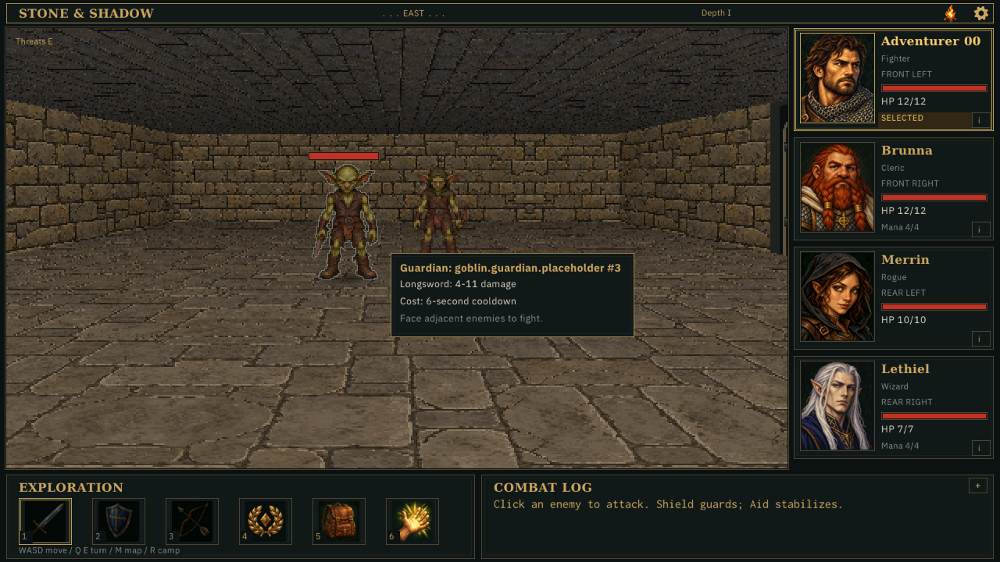
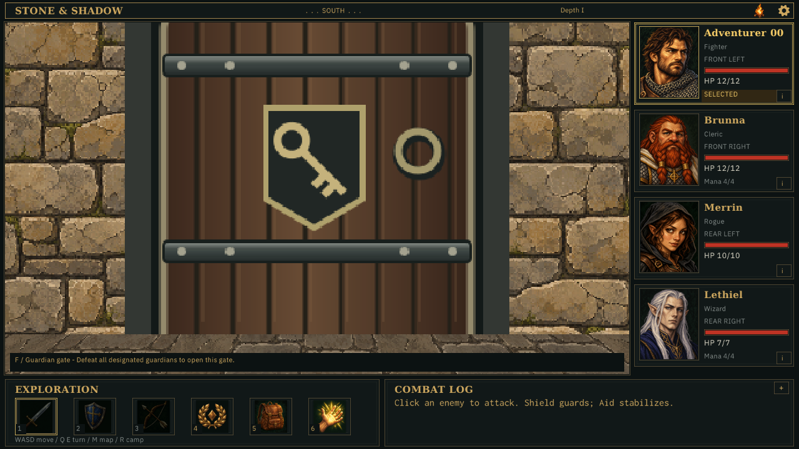
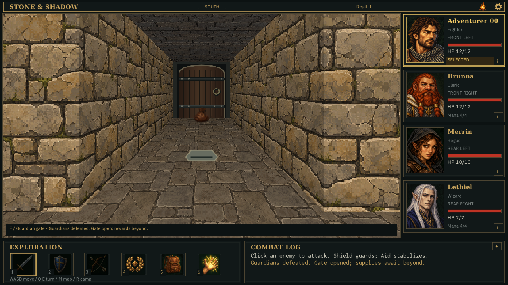
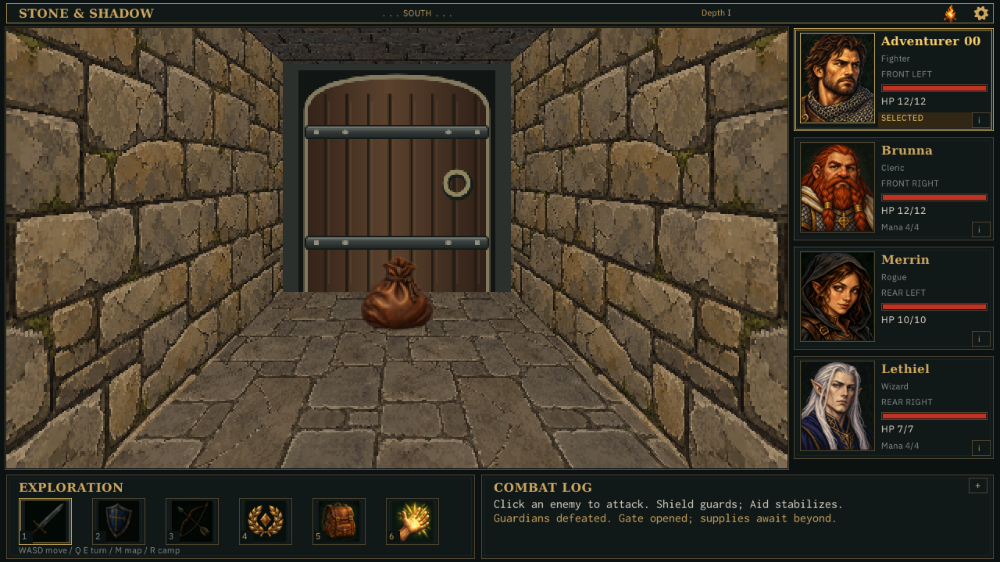
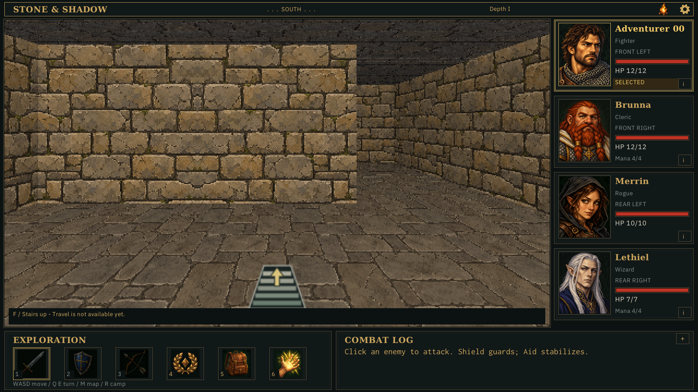
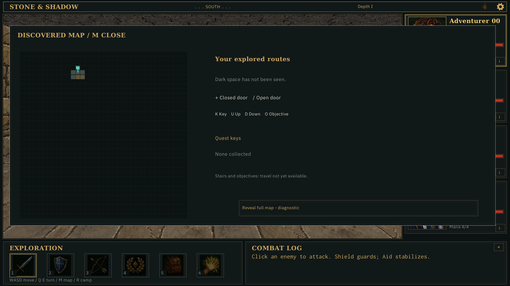
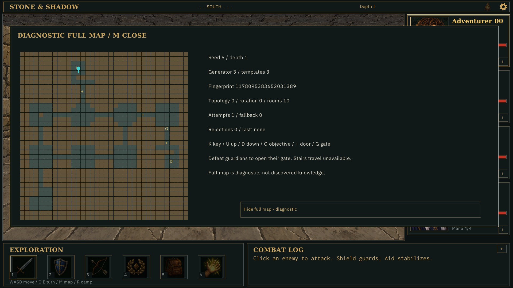